File: 000600.gt.txt (if the image is defective, simply delete all Arabic text and the line will be excluded)

سعد ما قال انقطع الدم.
File: 000601.gt.txt (if the image is defective, simply delete all Arabic text and the line will be excluded)
وكانت صفية عمة النبي، صلي الله عليه و سلم، في فارع، حصن حسان بن ثابت، وكان حسان فيه
File: 000602.gt.txt (if the image is defective, simply delete all Arabic text and the line will be excluded)

مع النساء لأنه كان جبانا، قالت: فأتانا آت من اليهود فقلت لحسان: هذا اليهودي يطوف
File: 000603.gt.txt (if the image is defective, simply delete all Arabic text and the line will be excluded)

بنا ولا نأمنه أن يدل على عوراتنا، فانزل إليه فاقتله. فقال: والله ما أنا بصاحب هذا.
File: 000604.gt.txt (if the image is defective, simply delete all Arabic text and the line will be excluded)
قالت: فأخذت عمودا ونزلت إليه فقتلته، ثم رجعت فقلت لحسان: انزل إليه فخذ سلبه،
File: 000605.gt.txt (if the image is defective, simply delete all Arabic text and the line will be excluded)

فإنني يمنعني منه أنه رجل. فقال: والله ما لي بسلبه من حاجة(4).
File: 000606.gt.txt (if the image is defective, simply delete all Arabic text and the line will be excluded)

ثم إن نعيم بن مسعود الأشجعي أتى النبي، صلي الله عليه و سلم، فقال: يا رسول الله صعلم إني قد
File: 000607.gt.txt (if the image is defective, simply delete all Arabic text and the line will be excluded)
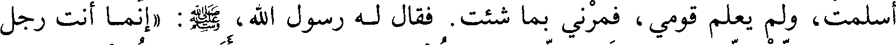
أسلمت، ولم يعلم قومي، فمرني بما شئت. فقال له رسول الله، صلي الله عليه و سلم: (انما أنت رجل
File: 000608.gt.txt (if the image is defective, simply delete all Arabic text and the line will be excluded)
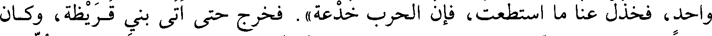
واحد، فخذل عنا ما استطعت، فإن الحرب خدعة). فخرج حتى أتى بني قريظة، وكان
File: 000609.gt.txt (if the image is defective, simply delete all Arabic text and the line will be excluded)
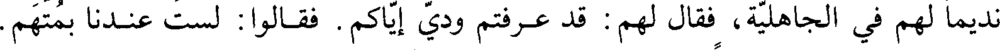
نديما لهم في الجاهلية، فقال لهم: قد عرفتم ودي إياكم. فقالوا: لست عندنا بمتهم.
File: 000610.gt.txt (if the image is defective, simply delete all Arabic text and the line will be excluded)

قال: قد ظاهرتم قريشا وغطفان على حرب محمد، وليسوا كأنتم، البلد بلدكم، به
File: 000611.gt.txt (if the image is defective, simply delete all Arabic text and the line will be excluded)
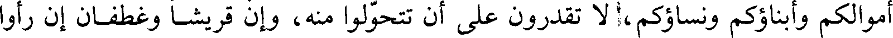
أموالكم وأبناؤكم ونساؤكم، لا تقدرون على أن تتحولوا منه، وإن قريشا وغطفان إن رأوا
File: 000612.gt.txt (if the image is defective, simply delete all Arabic text and the line will be excluded)
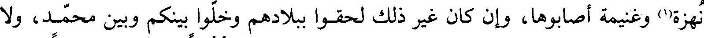
نهزة(1) وغنيمة أصابوها، وإن كان غير ذلك لحقوا ببلادهم وخلوا بينكم وبين محمد، ولا
File: 000613.gt.txt (if the image is defective, simply delete all Arabic text and the line will be excluded)
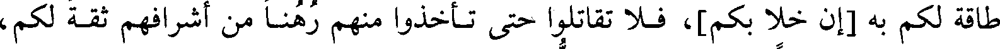
طاقة لكم به [إن خلا بكم]، فلا تقاتلوا حتى تأخذوا منهم رهنا من أشرافهم ثقة لكم،
File: 000614.gt.txt (if the image is defective, simply delete all Arabic text and the line will be excluded)
حتى تناجزوا محمدا. قالوا: أشرت بالنصح.
File: 000615.gt.txt (if the image is defective, simply delete all Arabic text and the line will be excluded)
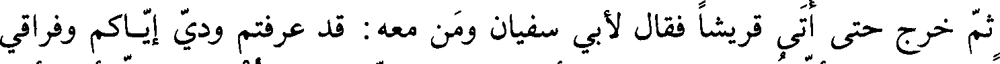
ثم خرج حتى أتى قريشا فقال لأبي سفيان ومن معه: قد عرفتم ودي إياكم وفراقي
File: 000616.gt.txt (if the image is defective, simply delete all Arabic text and the line will be excluded)

محمدا، وقد بلغني أن قريظة ندموا، وقد أرسلوا إلى محمد: هل يرضيك عنا أن نأخذ
File: 000617.gt.txt (if the image is defective, simply delete all Arabic text and the line will be excluded)
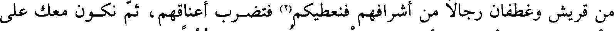
من قريش وغطفان رجالا من أشرافهم فنعطيكهم(2) فتضرب أعناقهم، ثم نكون معك على
File: 000618.gt.txt (if the image is defective, simply delete all Arabic text and the line will be excluded)
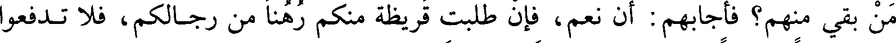
من بقي منهم؟ فأجابهم: أن نعم، فإن طلبت قريظة منكم رهنا من رجالكم، فلا تدفعوا
File: 000619.gt.txt (if the image is defective, simply delete all Arabic text and the line will be excluded)

إليهم رجلا واحدا. ثم خرج حتى أتى غطفان فقال: أنتم أهلي وعشيرتي. قال لهم مثل
File: 000620.gt.txt (if the image is defective, simply delete all Arabic text and the line will be excluded)
~و ما قال لقريش وحذرهم.
File: 000621.gt.txt (if the image is defective, simply delete all Arabic text and the line will be excluded)
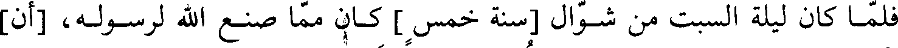
فلما كانت ليلة السبت من شوال [سنة خمس] كان من صنع الله لرسوله [أن]
File: 000622.gt.txt (if the image is defective, simply delete all Arabic text and the line will be excluded)

أرسل أبو سفيان ورؤوس غطفان إلى قريظة عكرمة بن بي جهل في نفر من قريش
File: 000623.gt.txt (if the image is defective, simply delete all Arabic text and the line will be excluded)

وغطفان وقالوا لهم: أنا لسنا بدار مقام، قد هلك الخف والحافر، فاغدوا(3) للقتال [حتى
File: 000624.gt.txt (if the image is defective, simply delete all Arabic text and the line will be excluded)

نناجز محمدا]. فأرسلوا إليهم: أن اليوم السبت لا نعمل فيه شيئا، ولسنا نقاتل معكم
File: 000625.gt.txt (if the image is defective, simply delete all Arabic text and the line will be excluded)

حتى تعطونا رهنا ثقة لنا فإنا نخشى أن ترجعوا إلى بلادكم وتتركونا والرجل ونحن
File: 000626.gt.txt (if the image is defective, simply delete all Arabic text and the line will be excluded)
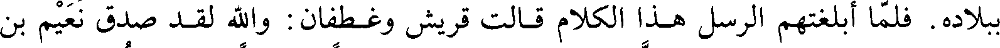
ببلاده. فلما أبلغتهم الرسل هذا الكلام قالت قريش وغطفان: والله لقد صدق نعيم بن
File: 000627.gt.txt (if the image is defective, simply delete all Arabic text and the line will be excluded)

مسعود، فأرسلوا إلى قريظة: [إنا] والله لا ندفع إليكم رجلا واحدا. فقالت قريظة عند
File: 000628.gt.txt (if the image is defective, simply delete all Arabic text and the line will be excluded)

ذلك: إن الذي ذكر نعيم بن مسعود لحق. وخذل الله بينهم، وبعث الله عليهم ريحا في
File: 000629.gt.txt (if the image is defective, simply delete all Arabic text and the line will be excluded)

ليال شاتية شديدة البرد، فجعلت تكفأ قدورهم، وتطرح أبنيتهم.
To Save: `Ctrl+s`, make sure to choose `Webpage, complete`!